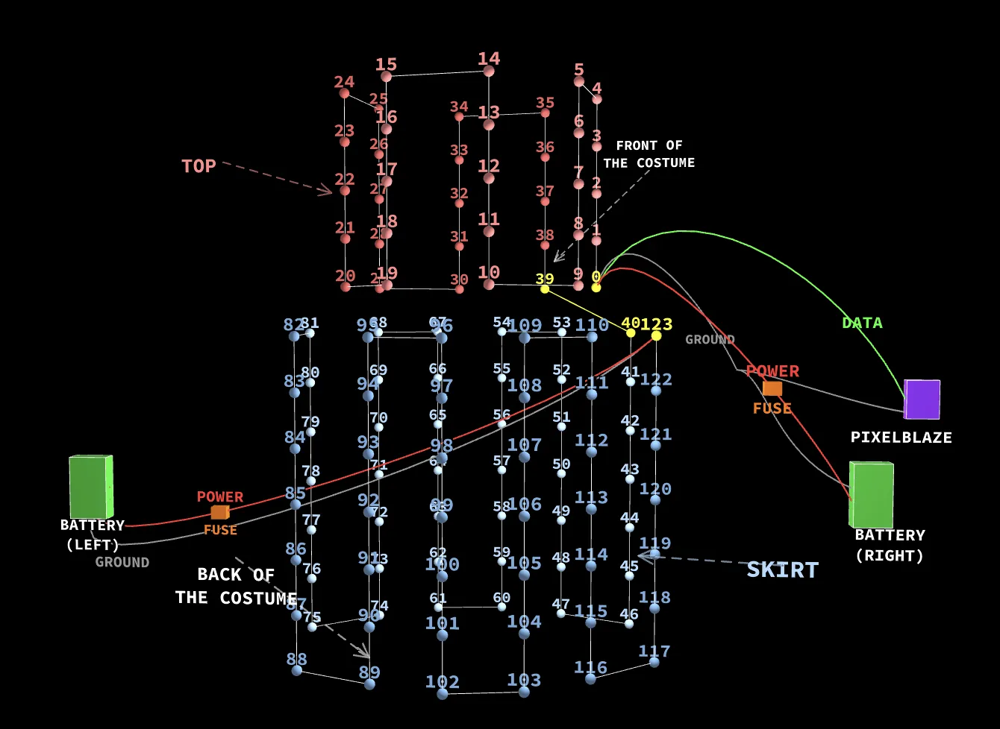

Programmable LED Dance Costumes: Designing Embodied Wearable Technology to Enhance Kinesthetic Expression for Dance Performance
This creativity-support tool explores how wearable technology can expand dancers’ expressive agency without restricting movement.
Designer and Researcher

Performance Picture

Performance Picture

Performance Picture

Performance Picture

Outer layer

Inner layer
{kind=link}

Costume Diagram
Interface to Control LEDs

LED Patterns
This creativity-support tool explores how wearable technology can expand dancers’ expressive agency without restricting movement. I designed and built two live-programmable costumes, each integrated with 124 addressable LEDs and controlled through a Pixelblaze microcontroller. Rather than serving as decorative lighting, the costumes use pixel-mapped patterns that can be shaped in real time during performance, allowing shifts in movement, stillness, energy, and duet dynamics to appear directly on the body.
The costume system was developed through iterative prototyping, rehearsal testing, and performer feedback. Early LED layouts created issues with tension, solder-joint stress, and restricted movement, so the final design used a layered textile structure and a continuous “snake” LED path that improved comfort, repairability, and visual continuity. Originally presented in performance at UCSB’s Ballet Studio Theater, the work will appear at ACM SIGGRAPH 2026 as part of the SIGGRAPH Posters program.
The costume system was developed through iterative prototyping, rehearsal testing, and performer feedback. Early LED layouts created issues with tension, solder-joint stress, and restricted movement, so the final design used a layered textile structure and a continuous “snake” LED path that improved comfort, repairability, and visual continuity. Originally presented in performance at UCSB’s Ballet Studio Theater, the work will appear at ACM SIGGRAPH 2026 as part of the SIGGRAPH Posters program.
Project Credits
- Design & Research
- Siddharth Chattoraj